Turning Eclipse into an Arduino programming platform for kids
Mélanie Bats / Obeo
Curiosity
Explore, question and learn
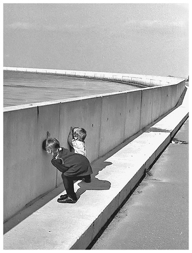
Discover by yourself
Explore to understand cause and effects.
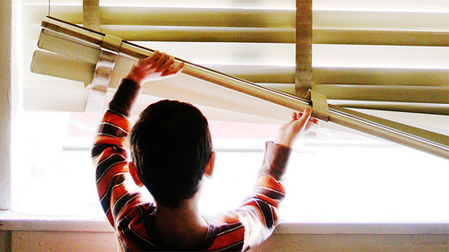
Computers are everywhere
To understand the world, you need to understand how computers work
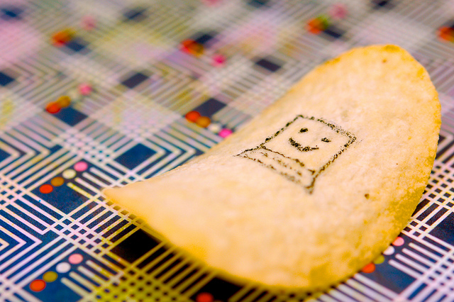
Understand electronics
Play with sensors and actuators
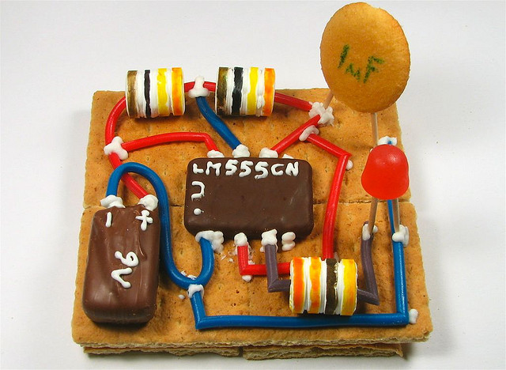
Open hardware
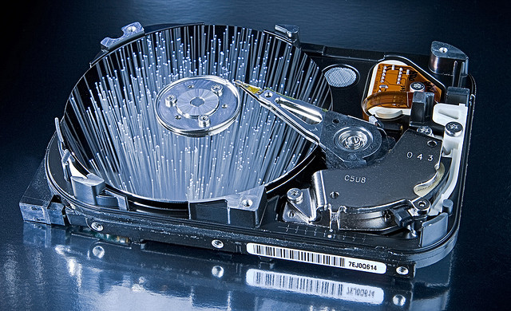
Electronic for kids
Open hardware dedicated to kids learning electronics : littleBits
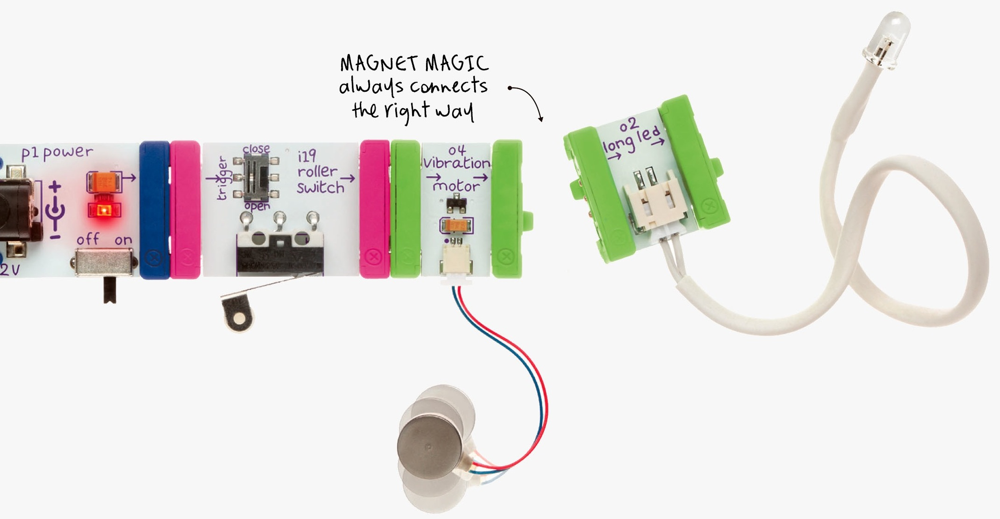
Arduino
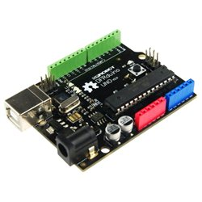
Arduino kits
Cheap, easy to find thanks to many different providers : AdaFruit, DFRobot, SeeedStudio, SnootLab, ...
So many kinds of modules available!
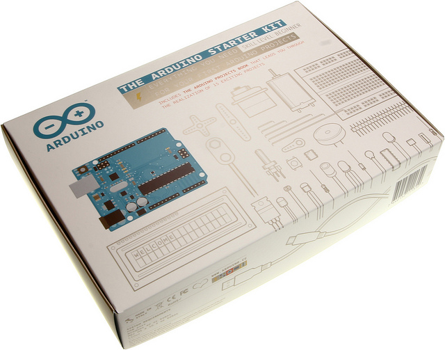
Understand programming
Many open source software are dedicated to learn programming to kids : Scratch, TurtleLogo, KidsRuby, Python4Kids...
Initiatives : Programatoo, Devoxx4Kids, greenlight, coding goûter...
Text
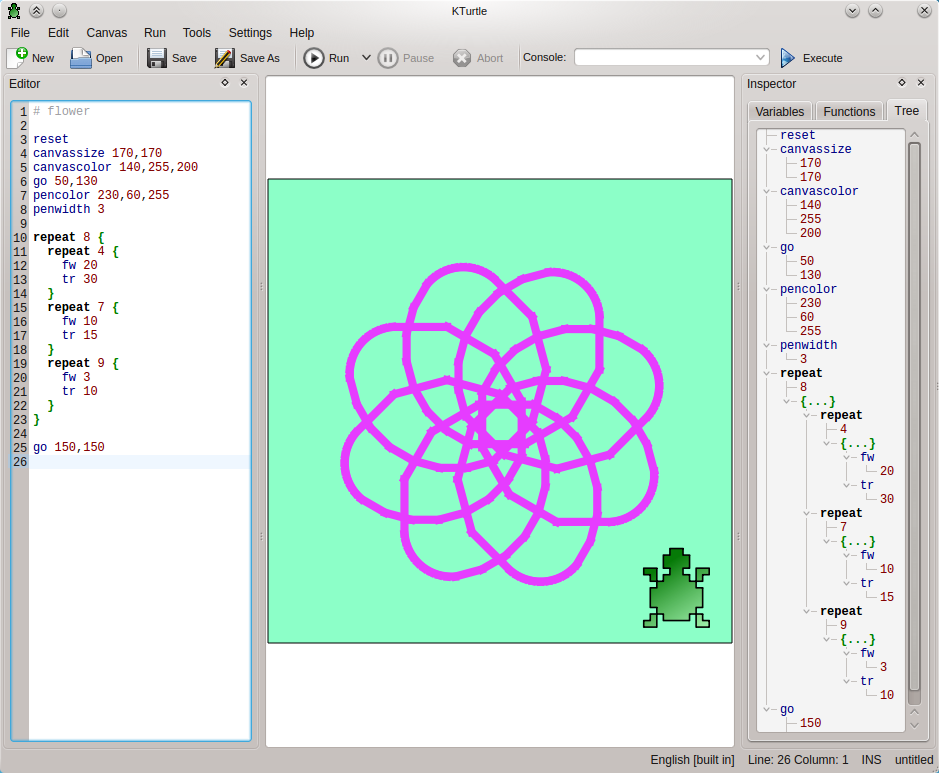
Graphical
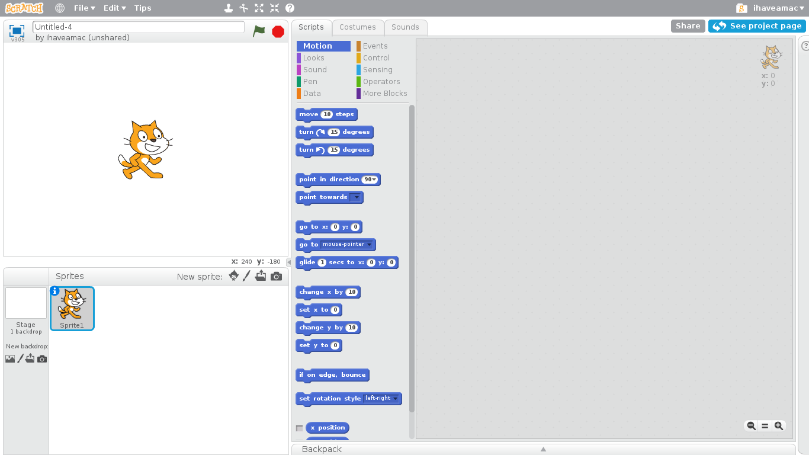
Program the real world
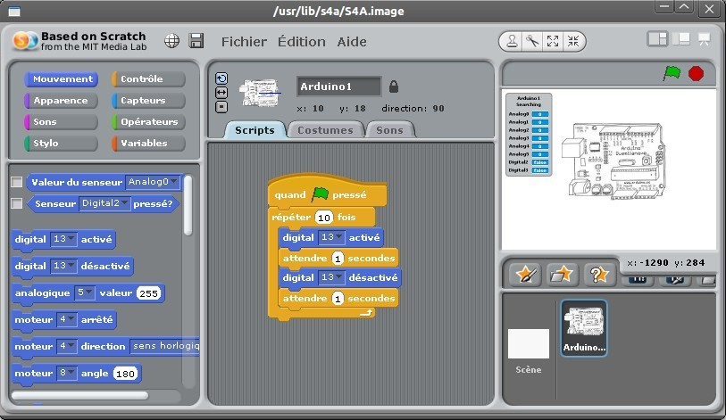
Eclipse IDE for developpers
Complex UI, concepts (perspectives, project lifecycle...), languages (Java, C)
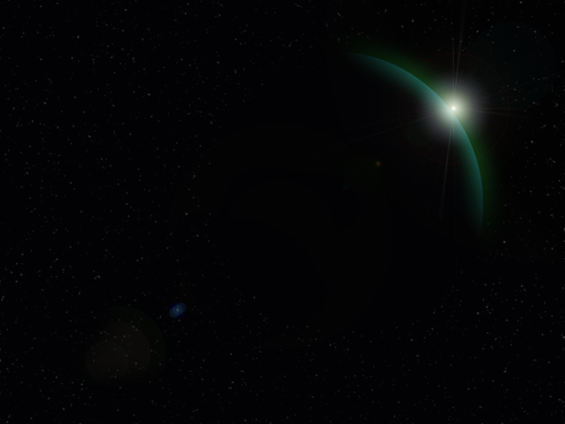
Turning Eclipse into an IDE for kids
Graphical programming & light UI
A simplified UI
No menu, only a toolbar with 4 buttons activated according to what is possible
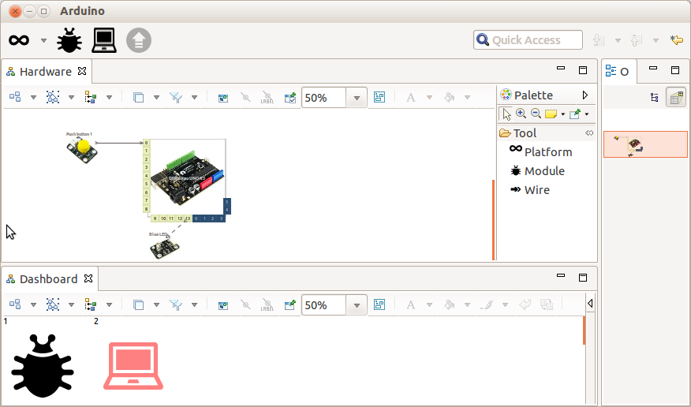
Dashboard
The process :
- Define connections between hardware platform and modules
- Describe the sketch
- Upload on the target
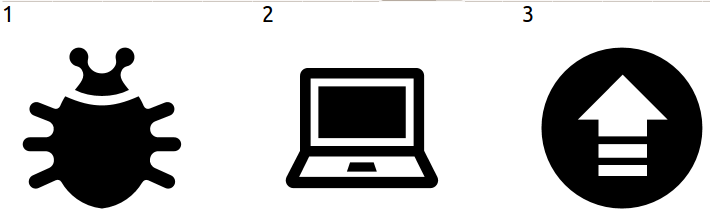
Hardware
Platform, Modules, Wire
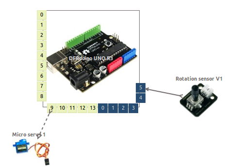
Sketch
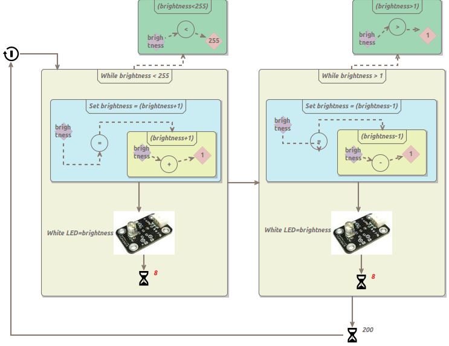
Prototype based on DFRobot Ardublock kit
Sensors : ambient light, infrared , sound, push button, rotation
Actuators : LEDs, micro servo motors, fan, music player shield
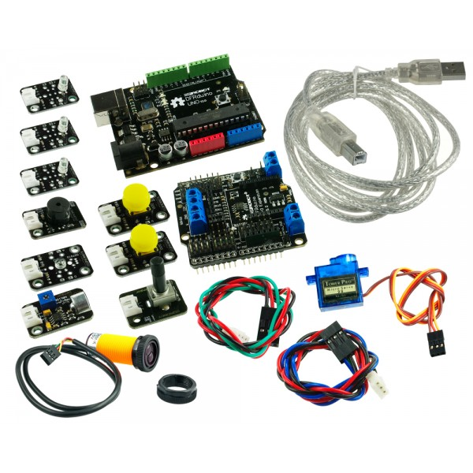
Hello world
Blink a LED!
Graphical block-based language
- Structures : while, repeat, if
- Functions : delay
- Hardware modules : Status, Level, Sensor
- Variables
- Constants
- Mathematical operators
Sirius
A tool to quickly define DSL based custom multi-view workbenches with dedicated representations
Why using Sirius ?
- For the tool development phase : Dynamic & iterative (live) development
- For kids : Tooling adapted to the development of small Arduino projects
Arduino designer development
Step 1 - Arduino DSL
DSL describing what are Arduino hardware modules and sketches
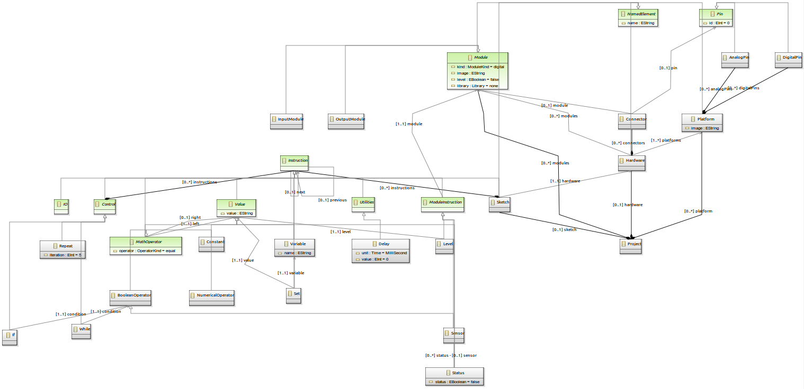
Arduino designer development
Step 2 - Arduino diagram specification
Sirius specification
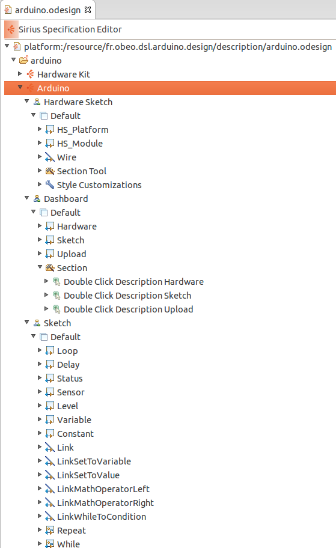
Arduino designer development
Step 3 - Code generator
Generate ino files with Acceleo
int brightness;
void setup() {
brightness=0;
}
void loop() {
while ((brightness<255))
{
brightness=(brightness+1);
analogWrite(11,255-(brightness));
delay(8);
}
while ((brightness>1))
{
brightness=(brightness-1);
analogWrite(11,255-(brightness));
delay(8);
}
delay(200);
}
Arduino designer development
Step 4 - Integrate Arduino compiler and target uploader
Use Arduino IDE to get well packaged tools
avr-gcc, avrdude
Use sensor
A LED + push button
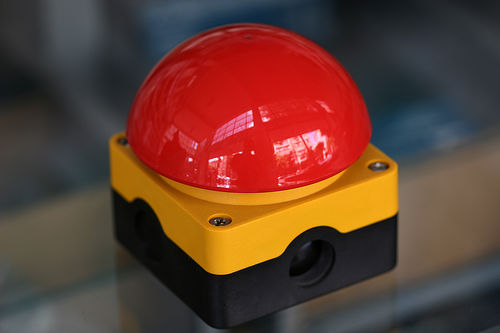
Fade light
1 LED + programming language
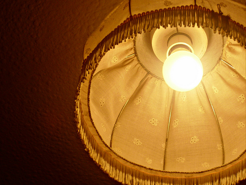
Function
LED blinker
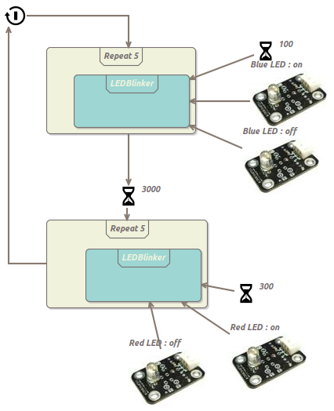
A more complex project
A pet robot
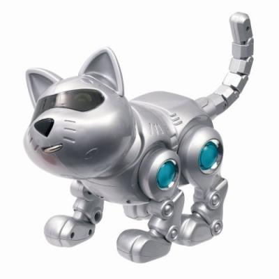
Tigger
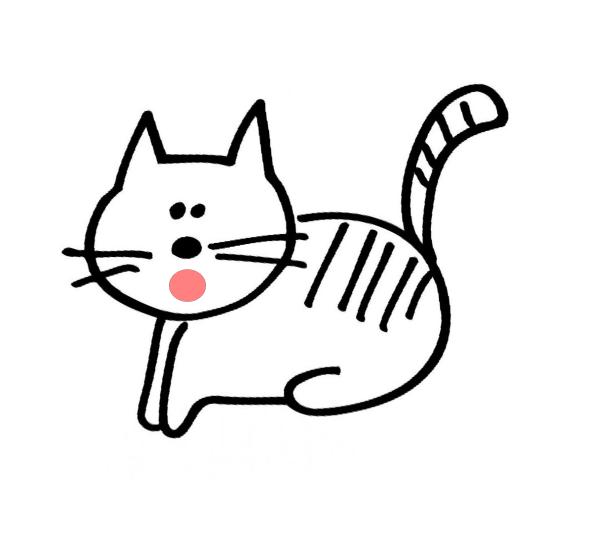
Many sensors and actuators
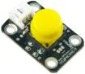
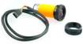
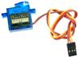
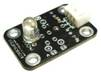
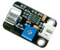
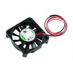
Recycled high tech composite
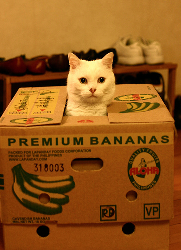
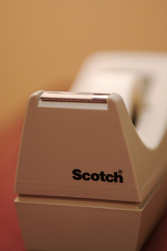
Touch
Push button nose commands a blinking necklace
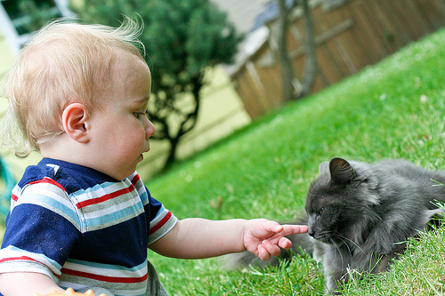
See
Infrared sensor eye commands the servo-motored tail
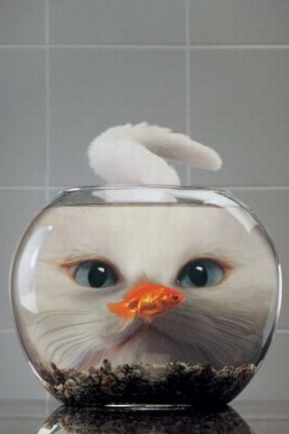
Hear
Sound sensor ear commands the bubble machine
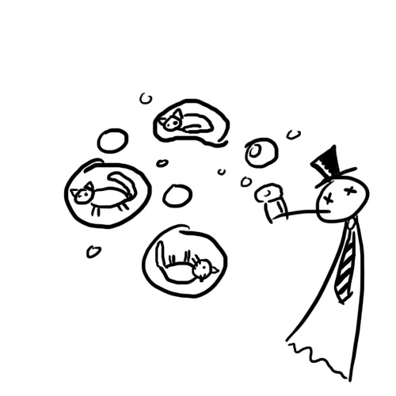
More "Sirius" presentations
http://eclipse.org/sirius/
Find the products and the documentation ?
Soon : download the products for windows and linux
https://github.com/mbats/arduino/wiki
Thanks! Questions?
Clap your hands to make more bubbles!
And maybe ask questions...
Don't forget to give feedback